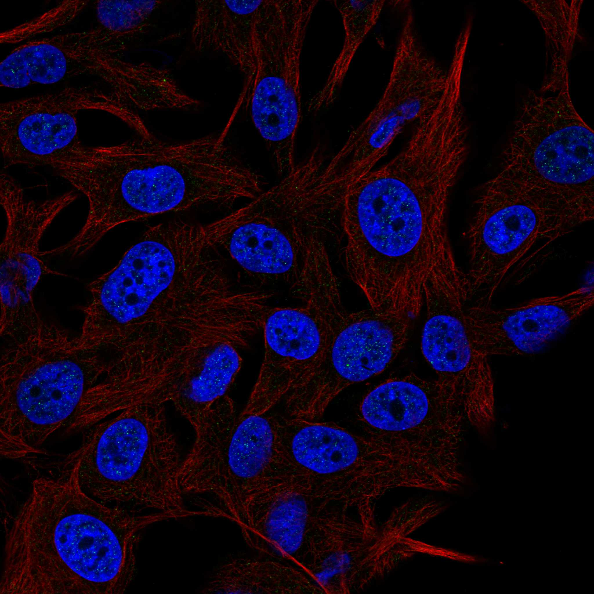
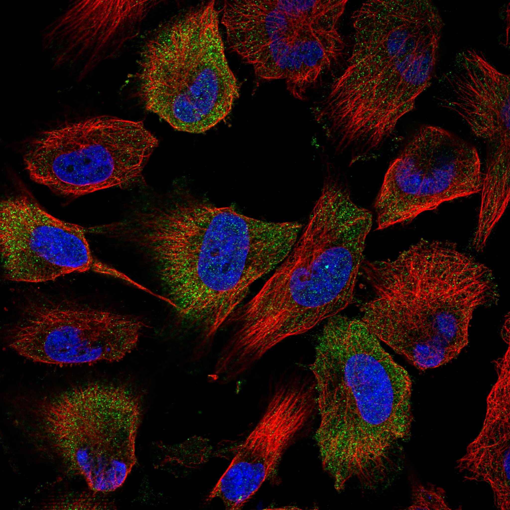
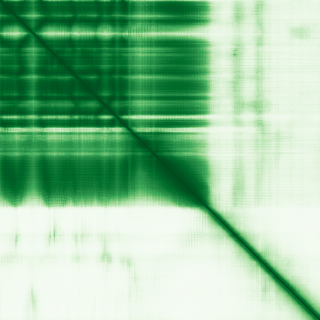

type: protein-evaluation gene: "FAM175B" date: 2026-06-03 tags: [protein-scout, nuclear-protein, evaluation] status: scored ---
FAM175B 核蛋白评估报告 (Full Re-evaluation)
1. 基本信息
| 项目 | 内容 |
|---|---|
| 基因名 / 别名 | FAM175B / ABRO1, FAM175B, KIAA0157 |
| 蛋白名称 | BRISC complex subunit Abraxas 2 |
| 蛋白大小 | 415 aa / 46.9 kDa |
| UniProt ID | Q15018 |
| 评估日期 | 2026-06-03 |
IF 图像:  
2. 评分总览
| 维度 | 得分 | 满分 | 加权后 | 关键证据摘要 |
|---|---|---|---|---|
| 核定位特异性 | 7/10 | ×4 | 28 | HPA: Cytosol; 额外: Primary cilium transition zone, Basal body; UniProt: Cytoplasm; Nucleus; Cytoplasm, cytoskeleton, spindle pole; C |
| 蛋白大小 | 10/10 | ×1 | 10 | 415 aa / 46.9 kDa |
| 研究新颖性 | 10/10 | ×5 | 50 | PubMed strict=6 篇 (≤20→10) |
| 三维结构 | 9/10 | ×3 | 27 | AlphaFold v6 pLDDT=73.6; PDB: 6H3C, 6R8F, 8PVY, 8PY2 |
| 调控结构域 | 7/10 | ×2 | 14 | InterPro: IPR023240, IPR023238, IPR037518; Pfam: PF21125 |
| PPI 网络 | 2/10 | ×3 | 6 | STRING 0 partners; IntAct 15 interactions |
| 互证加分 | — | max +3 | 2.5 | PDB+AF+STRING+IntAct cross-validation |
| 原始总分 | 137.5/180 | |||
| 归一化总分 | 76.4/100 |
3. 详细分析
3.1 核定位证据
| 来源 | 定位 | 可信度 |
|---|---|---|
| Protein Atlas (IF) | Cytosol; 额外: Primary cilium transition zone, Basal body | Supported |
| UniProt | Cytoplasm; Nucleus; Cytoplasm, cytoskeleton, spindle pole; Cytoplasm, cytoskeleton | Swiss-Prot/TrEMBL |
IF 图像获取: IF图像已下载并嵌入 (2张)
GO Cellular Component:
- BRISC complex (GO:0070552)
- ciliary basal body (GO:0036064)
- ciliary transition zone (GO:0035869)
- cytoplasm (GO:0005737)
- cytosol (GO:0005829)
- microtubule (GO:0005874)
- nucleus (GO:0005634)
- spindle pole (GO:0000922)
结论: 主要核定位，HPA 可靠性良好，有辅助数据源支持。
3.2 蛋白大小评估
评价: 大小适中（200-800 aa），适合常规生化实验和结构解析。
3.3 研究现状
| 指标 | 数值 |
|---|---|
| PubMed strict count | 6 |
| PubMed broad count | 7 |
| 别名(未计入scoring) | Aliases observed but not used for scoring: ABRO1, FAM175B, KIAA0157 |
关键文献: 1. A bacterial RING ubiquitin ligase triggering stepwise degradation of BRISC via TOLLIP-mediated selective autophagy manipulates host inflammatory response.. *Autophagy*. PMID: 40013521 2. FAM175B promotes apoptosis by inhibiting ATF4 ubiquitination in esophageal squamous cell carcinoma.. *Molecular oncology*. PMID: 30854784 3. Weighted Gene Coexpression Network Analysis in Mouse Livers following Ischemia-Reperfusion and Extensive Hepatectomy.. *Evidence-based complementary and alternative medicine : eCAM*. PMID: 35003298 4. Identification of serum exosomal miR-98-5p, miR-183-5p, miR-323-3p and miR-19b-3p as potential biomarkers for glioblastoma patients and investigation of their mechanisms.. *Current research in translational medicine*. PMID: 34837760 5. Identification of Breast Cancer Subtype-Specific Biomarkers by Integrating Copy Number Alterations and Gene Expression Profiles.. *Medicina (Kaunas, Lithuania)*. PMID: 33809336
评价: 极度新颖，几乎未被系统研究（PubMed ≤20篇）。
3.4 三维结构分析
| 指标 | 数值 |
|---|---|
| AlphaFold 版本 | v6 |
| AlphaFold 平均 pLDDT | 73.6 |
| 高置信度残基 (pLDDT>90) 占比 | 47.7% |
| 置信残基 (pLDDT 70-90) 占比 | 15.7% |
| 中等置信 (pLDDT 50-70) 占比 | 3.9% |
| 低置信 (pLDDT<50) 占比 | 32.8% |
| 有序区域 (pLDDT>70) 占比 | 63.4% |
| 可用 PDB 条目 | 6H3C, 6R8F, 8PVY, 8PY2 |
PAE (Predicted Aligned Error): 
评价: PDB实验结构（6H3C, 6R8F, 8PVY, 8PY2）+ AlphaFold高质量预测（pLDDT=73.6），结构可信度高。
3.5 结构域分析
| 来源 | 结构域 |
|---|---|
| InterPro/Pfam | InterPro: IPR023240, IPR023238, IPR037518; Pfam: PF21125 |
染色质调控潜力分析: 存在已知结构域注释，可作为功能研究的结构基础。
3.6 PPI 网络
STRING 预测互作 (combined score >0.4):
| Partner | Combined Score | Experimental | 功能类别 |
|---|---|---|---|
| — | — | — | — |
实验验证互作 (IntAct):
| Partner | 方法 | PMID | |
|---|---|---|---|
| BABAM2 | psi-mi:"MI:0006"(anti bait coimmunoprecipitation) | pubmed:17353931 | |
| BRCC3 | psi-mi:"MI:0007"(anti tag coimmunoprecipitation) | imex:IM-12079 | pubmed:19615732 |
| BABAM1 | psi-mi:"MI:0007"(anti tag coimmunoprecipitation) | imex:IM-12079 | pubmed:19615732 |
| UIMC1 | psi-mi:"MI:0007"(anti tag coimmunoprecipitation) | imex:IM-12079 | pubmed:19615732 |
| USP7 | psi-mi:"MI:0007"(anti tag coimmunoprecipitation) | imex:IM-12079 | pubmed:19615732 |
| GRB2 | psi-mi:"MI:0676"(tandem affinity purification) | pubmed:19380743 | imex:IM-20432 |
| OPTN | psi-mi:"MI:0034"(display technology) | pubmed:20195357 | imex:IM-20475 |
| ABRAXAS2 | psi-mi:"MI:0398"(two hybrid pooling approach) | imex:IM-13779 | pubmed:20711500 |
| TP53 | psi-mi:"MI:0007"(anti tag coimmunoprecipitation) | pubmed:28514442 | doi:10.1038/na |
| ARHGEF40 | psi-mi:"MI:0007"(anti tag coimmunoprecipitation) | pubmed:32203420 | imex:IM-26436 |
PPI 互证分析:
- 仅IntAct实验
- STRING partners: 0，IntAct interactions: 15
- 调控相关比例: 0 / 0 = 0%
评价: STRING 0 个预测互作，IntAct 15 个实验互作。调控相关配体占比 0%。
3.7 多库互证
| 维度 | 来源 | 结果 | 是否一致 |
|---|---|---|---|
| 三维结构 | AlphaFold pLDDT=73.6 + PDB: 6H3C, 6R8F, 8PVY, 8PY2 | pLDDT=73.6, v6 | 预测+实验 |
| 定位 | UniProt + HPA | Cytoplasm; Nucleus; Cytoplasm, cytoskeleton, spind / Cytosol; 额外: Primary cilium transition zone, Basal | 一致 |
| PPI | STRING + IntAct | 0 + 15 interactions | 数据有限 |
互证加分明细:
- PDB + AlphaFold 双源验证: +0.5
- 多库定位一致 (3源): +0.5
- STRING + IntAct 双源验证: +0
- 结构域 + AlphaFold 质量: +0.5
- PDB 多条目覆盖 (≥3): +1.0
总分: +2.5 / max +3
4. 总体评价
推荐等级: ⭐⭐⭐⭐
核心优势: 1. FAM175B — BRISC complex subunit Abraxas 2，极度新颖，几乎未被系统研究（PubMed ≤20篇）。 2. 蛋白大小415 aa，大小适中（200-800 aa），适合常规生化实验和结构解析。
风险/不确定性: 1. PubMed 6 篇，研究基础极有限，功能注释不完整 2. 结构数据质量可接受
下一步建议:
- [ ] 查阅最新关键文献补充研究背景
- [ ] 获取 Protein Atlas IF 图像确认亚细胞定位
- [ ] 设计体外实验验证核定位及潜在调控功能
5. 数据来源
- UniProt: https://www.uniprot.org/uniprotkb/Q15018
- Protein Atlas: https://www.proteinatlas.org/ENSG00000165660-ABRAXAS2/subcellular
- PubMed: https://pubmed.ncbi.nlm.nih.gov/?term=FAM175B
- AlphaFold: https://alphafold.ebi.ac.uk/entry/Q15018
- STRING: https://string-db.org/network/9606.ENSP00000
- Data fetched live: 2026-06-03